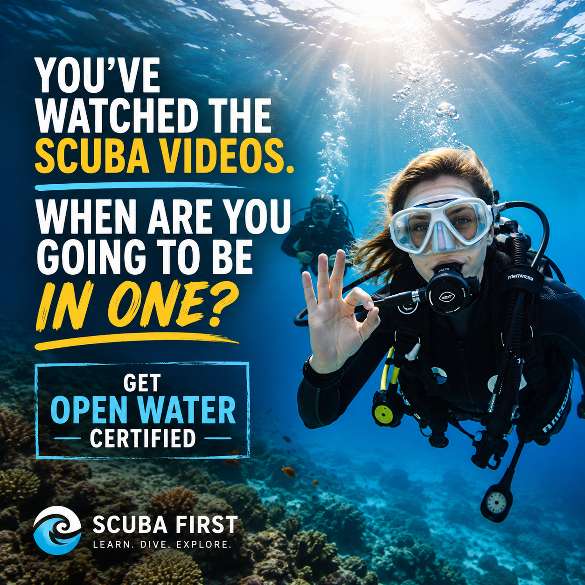
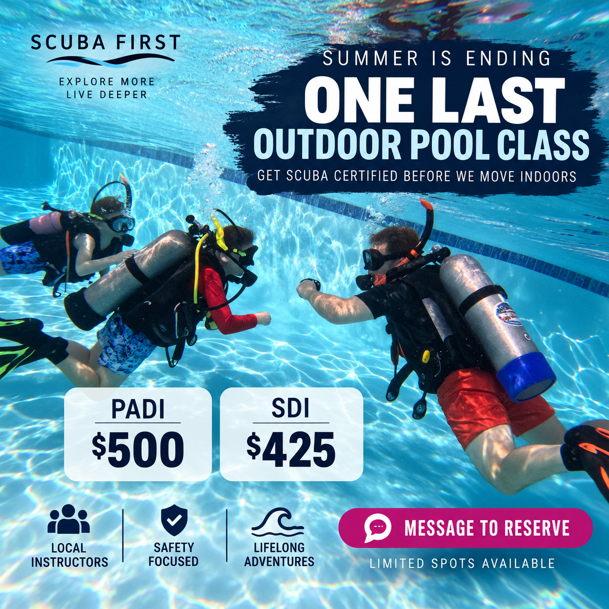
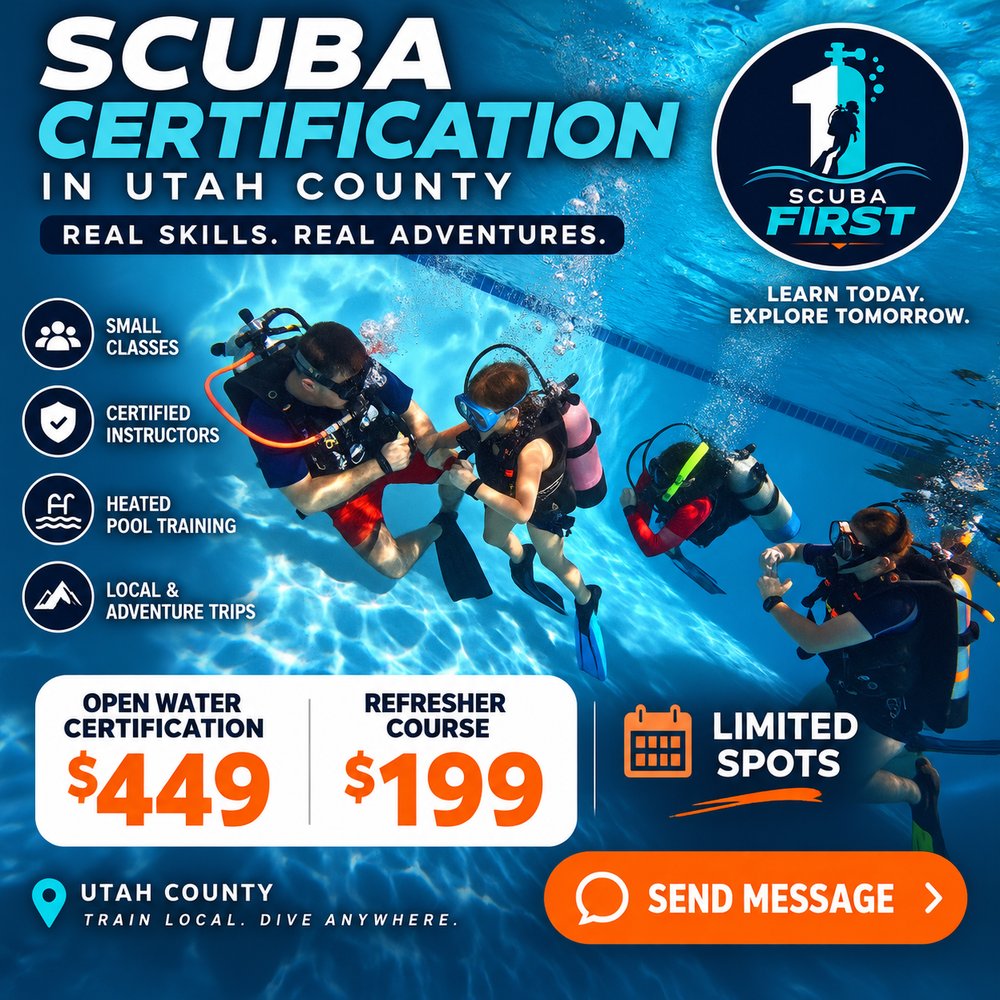

I'M NEW TO SCUBA
Open Water
Learn the core skills, complete your training dives, and earn a recognized entry-level certification through PADI or SDI.
PADI $500 • SDI $425
PADI + SDI SCUBA TRAINING · UTAH COUNTY
Learn the skills. Build real confidence underwater. Start the kind of adventures you keep talking about long after the trip is over.
YOUR NEXT DIVE STARTS HERE
You do not need to decode a giant course catalog. Pick the stage that sounds like you and we’ll help with the rest.
I'M NEW TO SCUBA
Learn the core skills, complete your training dives, and earn a recognized entry-level certification through PADI or SDI.
I'M CERTIFIED
Expand your range, sharpen skills and gain experience beyond the basics with guided advanced training.
I WANT TO BE A STRONGER BUDDY
Build awareness, prevention and response skills so you can handle problems with more confidence and calm.
I WANT A BIGGER GOAL
We’ll help map the training, specialties and experience you need to keep progressing toward a Master Diver-level goal.
WHY SCUBA FIRST
We teach for the moment after certification: when you’re on a boat, at a lake, on vacation, or standing at the edge of a dive site thinking, “I know what to do.”
Both instructors are cross-certified with PADI and SDI, so we can help you choose the path that fits your needs.
More coaching. More time to practice. Less feeling like you’re one person in a crowd.
We’re based in Payson and serve Utah County, with training designed to prepare you to dive far beyond Utah.
“
Scuba comes first—and everything else comes second.
Not because life stops for scuba. Because once you start diving, you start planning the next trip, the next skill, the next place, and the next story.
HOW IT WORKS
Start with Open Water or tell us what certification you already have.
Select the course, complete your registration and pay online when checkout is available.
Complete academics, confined-water practice and the required training dives.
Use the skills, confidence and certification to make the next adventure happen.
BUILT FOR WHERE SCUBA FIRST IS GOING
The site is structured so Scuba First can add group dive travel and equipment sales later without rebuilding the whole thing.
Trip pages, deposits, traveler information and itinerary details.
Selected gear, training bundles and online checkout when you’re ready to sell.
COMMON QUESTIONS
No. Open Water is designed as an entry-level certification. You’ll still need to meet the applicable agency prerequisites and medical requirements.
Both. Scuba First instructors are cross-certified with PADI and SDI. We can help you understand the practical differences and choose the right training route.
Scuba First is based in Payson, Utah and serves students throughout Utah County. Exact classroom, pool and open-water locations depend on the course and schedule.
Requirements vary by course. We’ll tell you exactly what you need before class; students should expect to provide appropriate personal gear such as a mask, fins and snorkel unless otherwise arranged.
Junior certification options may be available. Minimum ages, depth limits and supervision requirements depend on the training agency and course.
That is normal. Small-class coaching gives you time to practice skills at a pace that builds comfort and confidence instead of rushing through them.
READY WHEN YOU ARE
Tell us what you want to do. We’ll help you find the next class or answer the question that’s keeping you from signing up.
SEE WHAT SCUBA FIRST IS LIKE
Watch the training. Meet the vibe. Then come make your own dive videos.

Adventure starts before the trip →
See what training looks like →
Classes, tips & real dive stories →